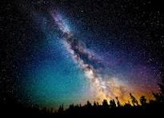

Service

Sky Cinema
Sky Cinema, a group of film channels on Sky UK and Ireland, formerly Sky Movies Sky Cinema, the previous name of two Sky Movies channels on Sky UK and Ireland from 1998 to 2007 Sky Cinema (Germany), a group of German film channels on Sky Deutschland, formerly Sky Film Sky Cinema, a flagship channel of Sky Cinema Germany, formerly Premiere 1, 2 and 3
Sky Movies
Sky Movies is a group of subscription television movie channels in New Zealand operated by Sky. Sky Movies was started in 1990 as one of the original channels on the Sky UHF Service

Sky Showcase
Sky Showcase is a British pay television channel which launched on 1 September 2021. It is owned and operated by Sky Group, a division of American media company Comcast.